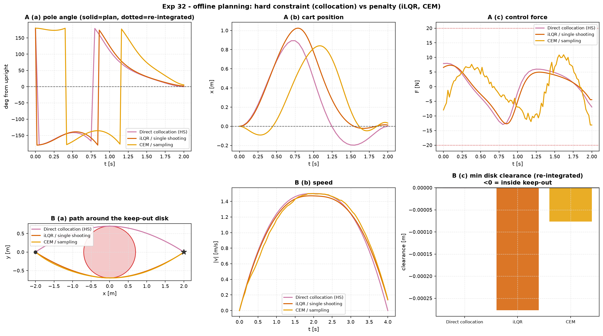

Experiment 32 — direct collocation vs shooting vs sampling (offline)¶
Question. Experiments 24, 25 and 26 raced iLQR (indirect / single shooting) against CEM (sampling) as online receding-horizon controllers. Every one of those rests on solving a finite-horizon optimal-control problem, and there is a third way to do that the repo did not have: direct transcription — make the state and the input at every knot decision variables of one nonlinear program, and enforce the discretised dynamics as equality constraints. The thing direct transcription can express that the other two cannot is a hard constraint — "end exactly here", "stay out of there" — instead of a penalty weight. This experiment tests that on two offline problems.
Companion: [aimct.planning.DirectCollocation
(new — Hermite-Simpson collocation, SLSQP),
[aimct.controllers.iLQR,
[aimct.controllers.SamplingMPC.
In every row: collocation takes the boundary / keep-out condition as a
hard constraint; iLQR and CEM take it as a penalty (a large terminal
Qf, or a quartic keep-out barrier in a custom cost). *_rolled metrics
re-integrate the returned u through the true dynamics with a fine RK4 (FOH for
collocation, ZOH for iLQR / CEM) — the honest "does the plan actually fly"
check.
python experiments/32_direct_collocation_vs_ilqr/run.py
AIMCT_EXP_FULL=1 python experiments/32_direct_collocation_vs_ilqr/run.py # committed numbers
Task A — minimum-effort cart-pole swing-up (hard terminal constraint)¶
| planner | effort ∫u² | term err (planned) | term err (re-integrated) | max dyn. drift | solve |
|---|---|---|---|---|---|
| Direct collocation (HS) | 74.95 | 0 | 8.1e-4 | 8.1e-4 | 0.71 s |
| iLQR / single shooting | 65.03 | 0.253 | 0.253 | 3.5e-5 | 1.41 s |
| CEM / sampling | 88.02 | 0.649 | 0.649 | 1.3e-5 | 8.27 s |
Collocation Hermite-Simpson defect norm: 2.1e-12. iLQR / CEM terminal
penalty Qf = diag([400, 40, 800, 40]).
Task B — planar point mass around a keep-out disk (hard path constraint)¶
min ∫₀ᵀ ‖a‖² dt
s.t. double integrator, x(0)=(−2,0), x(T)=(2,0), |a| ≤ 3, T = 4 s,
(x−0)² + (y−0)² ≥ 0.70² ← keep-out disk on the straight-line path
| planner | effort ∫‖a‖² | term err | min disk clearance (planned) | (re-integrated) | path len | solve |
|---|---|---|---|---|---|---|
| Direct collocation (HS) | 4.481 | 1e-22 | +0.00 mm | −0.00 mm | 4.294 | 0.51 s |
| iLQR / single shooting | 3.953 | 0.138 | −0.28 mm | −0.28 mm | 4.284 | 1.00 s |
| CEM / sampling | 4.181 | 0.145 | −0.08 mm | −0.08 mm | 4.297 | 4.55 s |
Collocation Hermite-Simpson defect norm: 2.8e-16. min clearance = closest
approach to the disk minus its radius; negative = the trajectory cut inside
the keep-out zone. iLQR / CEM keep-out barrier W · max(0, r² − d²)²,
W = 3·10³; all three warm-started from the same detour arc.

Takeaways¶
-
Only direct collocation actually meets the constraint — because for it the constraint is a constraint. Task A: planned terminal error 0, iLQR 0.25 and CEM 0.65 short of upright. Task B: collocation rides the keep-out boundary to ±0.003 mm and hits the goal to 1e-22, while both penalty methods finish inside the keep-out zone (by 0.3 mm / 0.08 mm) and 0.14 short of the goal. The penalty weight is a single knob trading "satisfy the constraint" against "minimise the objective"; there is no setting of it that gives you both exactly. A constraint has no such trade-off.
-
Lower "effort" for iLQR is not a win — it is a relaxed problem. iLQR reports the lowest objective in both tasks (65 vs 75; 3.95 vs 4.48), purely because it stopped short of the goal / clipped the corner. Effort is comparable only at equal constraint satisfaction. This is the standard trap in reading trajectory-optimisation numbers: check the constraint residual before the objective.
-
Cranking the penalty up does not rescue it. Task A with
Qf = diag([2000, 150, 4000, 150]): iLQR's terminal residual falls to 0.086 (effort rises to 71), CEM's to 0.51 but with the effort ballooning to 155 and the input nearly saturating — a stiff penalty makes the derivative-free search thrash. You approach the constraint asymptotically and pay for it elsewhere. -
Collocation was also the fastest to solve — one SLSQP solve (0.5–0.7 s) versus 1.0–1.4 s for iLQR to converge and 4.5–8.3 s for CEM's population. This is offline single-solve wall-clock; it is not the Exp-24 online story, where iLQR's one-iteration-per-step RTI is the cheap option and CEM blows the real-time budget.
-
Collocation's weakness is between the knots. The NLP equalities hold to 1e-12–1e-16, but Hermite-Simpson only makes the dynamics hold to third order across each interval, so a fine re-integration of the plan drifts — 8e-4 at 41 knots in Task A, and it was 1.7e-2 at 21 knots: mesh-dependent, converges away. iLQR and CEM have the opposite profile: they roll the true dynamics internally, so their plans are self-consistent to ~1e-5 — just self-consistent about reaching the wrong place. A collocation plan wants a fine mesh or a tracking controller (LQR / MPC on the linearisation) to fly open-loop; do not trust coarse-mesh knot values as a raw feedforward.
-
Which paradigm, when.
- Hard terminal / path constraints, offline, smooth model → direct collocation. The only one that treats "arrive exactly here" and "stay out of there" as constraints rather than tuning weights.
- Online receding horizon, smooth model → iLQR / RTI (Exp 24): one cheap iteration per step, and it returns a stabilising feedback gain.
- Non-smooth cost, contact, or black-box dynamics → CEM (Exp 25): no gradients or linearisation to be defeated, at the price of the slowest solve and the loosest constraint satisfaction.
Implementation notes / limits¶
- The
DirectCollocationtranscription here uses a dense analytic Hermite-Simpson defect Jacobian and hands the NLP to SLSQP. That is robust and fast on the problems above (few states, smooth, one active box or a low-dimensional path constraint). It is not yet hardened for a badly-scaled plant with an active nonconvex path constraint on many states at once — a keep-out disk on thePlanarQuadrotor(pitch gainℓ/I_yy ≈ 3·10³) makes SLSQP's LSQ subproblem singular;trust-constrcopes but takes 10–50 s. A variable/constraint-scaling pass and a sparse Jacobian are the fix, tracked for a later iteration. Task B uses the well-scaled point-mass model to keep the focus on the hard-constraint-vs-penalty question. - A knot landing exactly on the disk centre zeroes the path-constraint gradient there (singular LSQ), so all three planners warm-start from a detour arc.
Quantitative Benchmark Table¶
Experiment 32 - direct collocation vs shooting vs sampling (offline)¶
Task A - minimum-effort cart-pole swing-up (hard TERMINAL constraint)¶
min integral(u^2) dt s.t. the dynamics, x(0)=[0,0,pi,0], x(T)=[0,0,0,0], |u|<=20 N, T=2.0 s. term_err_rolled re-integrates the returned u through the true dynamics (FOH for collocation, ZOH for iLQR/CEM).
| planner | effort | term_err_planned | term_err_rolled | max_dyn_drift | peak_u | box_ok | knots | solve_ms | converged |
|---|---|---|---|---|---|---|---|---|---|
| Direct collocation (HS) | 74.95 | 0 | 0.0008135 | 0.0008135 | 12.92 | yes | 41 | 711 | yes |
| iLQR / single shooting | 65.03 | 0.2527 | 0.2527 | 3.473e-05 | 12.69 | yes | 101 | 1390 | yes |
| CEM / sampling | 88.02 | 0.6492 | 0.6493 | 1.3e-05 | 13.11 | yes | 101 | 8269 | yes |
Collocation HS defect norm: 2.13e-12.
Task B - planar point mass around a keep-out disk (hard PATH constraint)¶
min integral(||a||^2) dt s.t. the double integrator, x(0)=[-2.0, 0.0], x(T)=[2.0, 0.0], stay outside the disk centred (0,0) radius 0.70, |a|<=3, T=4.0 s. min_clear = min distance to the disk minus its radius; negative = inside the keep-out zone.
| planner | effort | term_err_planned | min_clear_planned | min_clear_rolled | path_len | peak_a | box_ok | knots | solve_ms | converged |
|---|---|---|---|---|---|---|---|---|---|---|
| Direct collocation (HS) | 4.481 | 1.25e-22 | +0.00 mm | -0.00 mm | 4.294 | 1.477 | yes | 41 | 508 | yes |
| iLQR / single shooting | 3.953 | 0.1378 | -0.28 mm | -0.28 mm | 4.284 | 1.441 | yes | 81 | 1001 | yes |
| CEM / sampling | 4.181 | 0.145 | -0.08 mm | -0.08 mm | 4.297 | 1.432 | yes | 81 | 4552 | yes |
Collocation HS defect norm: 2.78e-16.